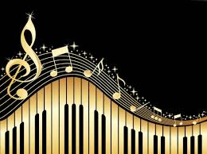
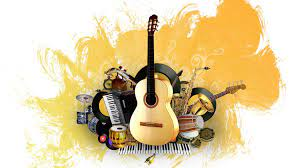
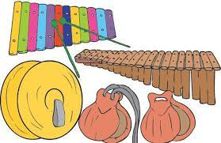
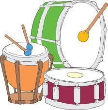
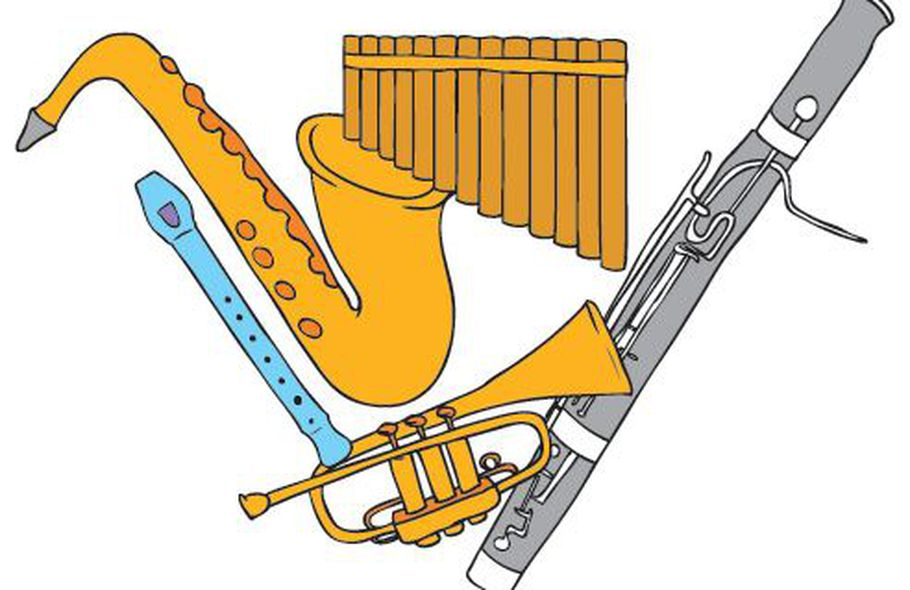
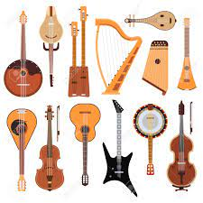

Indice.
Musica.
La música es, según la definición tradicional del
término, el arte de crear y organizar sonidos y silencios respetando los principios fundamentales de la melodía,
la armonía y el ritmo, mediante la intervención de complejos procesos psicoanímicos. El concepto de música ha
ido evolucionando desde su origen en la Antigua Grecia, en que se reunía sin distinción a la poesía, la música y
la danza como arte unitario. Desde hace varias décadas se ha vuelto más compleja la definición de qué es y qué
no es la música, ya que destacados compositores en el marco de diversas experiencias artísticas fronterizas
han realizado obras que, si bien podrían considerarse musicales, expanden los límites de la definición de este
arte.
La música, como toda manifestación artística, es un producto cultural con múltiples finalidades, entre otras,
la de suscitar una experiencia estética en el oyente, la de expresar sentimientos, emociones, circunstancias,
pensamientos o ideas, y cada vez más, cumplir una importante función terapéutica a través de la musicoterapia.
Instrumentos musicales.
Un instrumento musical es un objeto compuesto por
la combinación de uno o más sistemas resonantes y medios para su vibración, construido con el fin de producir
sonido en uno o más tonos que puedan ser combinados por un intérprete para producir música. Al final, cualquier
cosa que produzca sonido armónico puede servir de instrumento musical, pero la expresión se
reserva, generalmente, a objetos que tienen ese propósito en específico.
Son objetos que se encuentran conformados por la fusión de uno o varios sistemas resonantes junto a los medios
para su vibración, son elaborados con el objetivo de producir sonidos en distintos tonos, y que pueden ser
llegados a utilizar por una persona para crear música. Hay quienes defienden la idea de que cualquier cosa que
genere sonido puede funcionar como instrumento musical, sin embargo, el término es reservado de manera específica
para aquellos objetos que son creados con ese propósito específico.
Instrumentos Idiofonos.
 De acuerdo con la clasificación de Hornbostel-Sachs, son
instrumentos que cuentan con sonido propio y esto se debe a que su propio cuerpo es utilizado como materia
resonadora, tiene la capacidad para producir el sonido de manera primaria a través de las vibraciones que
genera su cuerpo, por lo tanto, no necesita de cuerdas, columnas de aire o membranas. El cuerpo puede estar
conformada por piedra, madera o metal, es decir que tiene una consistencia dura, pero sin embargo es
sonoro, cuenta con suficiente elasticidad para poder sostener el movimiento vibratorio.
Dentro de esta clasificación son muy diversos los instrumentos que se pueden englobar, ejemplo de ellos son el
xilófono, las campanas, castañuelas, el song y los platillos. En su mayoría aquellos instrumentos de percusión
que no emplean membranas para generar el sonido son clasificados como hidrófonos, mientras que aquellos que hacen
uso de membranas son llamados membranófonos, ambos términos suplantan al impreciso terminó instrumentos de
percusión, en especial cuando se quiere una definición más precisa.
Los Idiofonos.
Instrumentos Membranófonos.
Conocido de esta manera aquellos instrumentos que se
caracterizan porque el sonido que producen es creado en una membrana tensa, existen casos en los que pueden
contar con dos membranas tensas, como sucede con algunos instrumentos cilíndricos que cuentan con una membrana
en cada uno de sus extremos, dicha membrana también es conocida con el nombre de parche y en la mayoría
de los casos esta es percutida con la mano, baquetas, palillos o escobilla de metal.
Friccionados: Ellos se caracterizan porque la vibración que se genera en la membrana es producto de
el roce con la mano, aunque. puede también utilizarse un palo o cuerda.
Percutidos: Estos instrumentos tienen la peculiaridad de que la vibración Sonora se produce en el
momento en que la membrana que lo recubre es tocada directamente, ya sea con baquetas, palillos o la mano,
tal es el caso de los timbales o el tambor.
Soplados: en estos instrumentos las vibraciones ocurren por medio de la voz de quien los ejecuta, no cuentan
con un sonido que los caracteriza, sino que cambian el sonido de la voz
Los Membranófonos.
Instrumentos Aerófonos.
 conocidos también como instrumentos de vientos, en ellos el
sonido es generado por acción de la vibración de la masa de aire que se encuentra en el interior de
los mismos, sin la utilización de membranas o cuerdas ya que sólo necesitan el uso del viento. Aquellos
instrumentos de viento elaborados de metal se caracterizan por generar un sonido de timbre
de gran fuerza, cuando ese es el caso, lo que hace el intérprete es vibrar los labios en una boquilla que
se encarga de generar la frecuencia acústica, este tipo de instrumento pueden estar compuesto por uno o varios
tubos, y es dentro de dicho tubo donde se creará la columna de aire que el intérprete debe hacer vibrar cuando
sopla a través de la boquilla de la que se hizo mención anteriormente, la cual se ubica en el extremo del tubo
antes descrito. De igual forma los instrumentos de viento se subdividen en dos tipos y esto se debe a el tipo
de timbre que producen los mismos
Instrumentos de madera: El timbre que generan estos instrumentos, es más melodioso y suave que él producido
por los instrumentos de metal, el sonido se crea cuando se sopla a través de la embocadura de bisel, lo que
hacen “llorar” la caña de la lengüeta.
Instrumentos de Metal: en este caso el timbre se caracteriza por tener un sonido fuerte, metálico y un poco más
brillante, en este caso el sonido se crea gracias a la vibración de los labios en la boquilla metálica que posee
forma de copa, y que es la encargada de producir la frecuencia acústica.
Los Aerófonos.
Instrumentos Cordófonos.
 también conocidos como instrumentos de cuerda, estos
instrumentos musicales Se caracterizan porque el sonido que producen se crea gracias a las vibraciones de
una o varias cuerdas, que por lo general son amplificada a través de una caja de resonancia. Dichas cuerdas
se encuentran tensada entre dos puntos en el instrumento y suenan cuando son pulsadas, frotadas o percudidas.
En la actualidad los instrumentos de cuerda son el reflejo de la evolución de otros instrumentos los cuales
incluso tienen sus orígenes en culturas que ya han sido extinguidas, Como por ejemplo la cultura de los
imperios asirios, sumerios y acadios. Básicamente se encuentran compuestos por cuerda, una estructura que es
la encargada de soportar la caja de resonancia, este último elemento en algunos casos es la encargada de
soportar las cuerdas y su importancia puede variar dependiendo del instrumento.
Los Cordófonos.
La Guitarra.
Instrumento musical de cuerda formado por una caja hueca de madera de forma alargada con un leve estrechamiento en la parte media, un agujero circular en el centro y un brazo (mástil) a lo largo del cual se prolongan las cuerdas (generalmente seis) y en cuyo extremo se sitúan las clavijas, que permiten afinar el instrumento.
Puedes encontrara mas informacion y los tipos de guitarras dando clic aqui.Si quieres contactarnos debes llenar los siguientes campos.
Nuestro correo electronico.

Consúltenos a si tienes alguna duda al correo j.deblast@ucad.edu.mx

{kind=link}
{kind=link}
{kind=link}
{kind=link}
{kind=link}
{kind=link}
{kind=link}